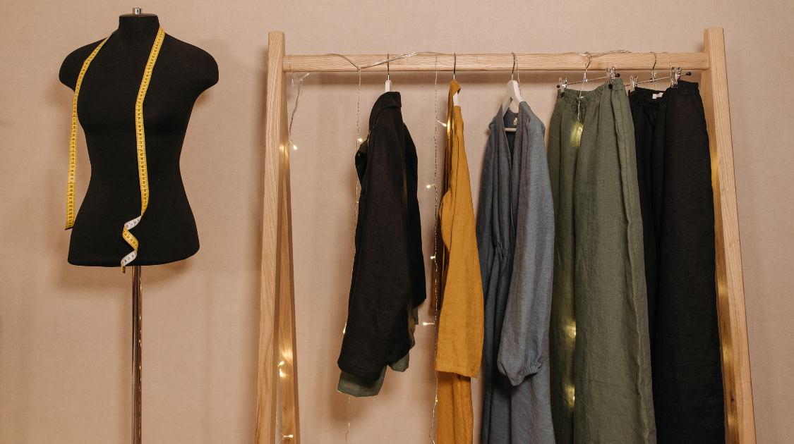

Student Life
Curate a Sustainable Wardrobe
By Lily Nordgren | Published Feb 2, 2021 8:18 p.m. PST

Sustainable clothing has become a trend in recent years. Small businesses and large retailers are advertising organic fabrics and vintage collections. Consumers are looking for clothing that is environmentally friendly. Companies are 'greenwashing' their clothing, or falsely marketing clothing as sustainable, to increase sales. It can be difficult to sort out truly sustainable clothes in the face of thousands of options. Here are some tips to create a sustainable wardrobe on a student’s budget.
Mend, resize, and reuse clothing that you own. Even if it is fast-fashion, the clothing that is already in your closet is the most sustainable clothing you have access to. There are a lot of resources online and in libraries that instruct how to mend holes, tailor clothing that does not fit, and create something new from old fabric. Treasuring and mending clothing can teach you how long certain items last compared to others, and which clothing styles you will wear long-term.
Shop second-hand. Items like coats, sweaters and shirts, pants, and dresses are everywhere in thrift stores, and most have never been worn or are gently used. Shopping second-hand gives new life to clothes, and reduces the amount of clothing in circulation. Just make sure to be selective if shopping second-hand is not your only option, because buying huge amounts of clothing, especially winter jackets and work clothes, can leave few options for people with less resources.
Make your own clothes! Sewing, knitting, crochet, weaving, quilting, there are hundreds of options to create unique pieces. Handmade clothing is special, and will likely last longer than most machine-made clothing. As a bonus, making your own clothes allows you to design pieces that fit and suit you perfectly. If you are not sure where to get started, small items like hats or tank-tops are relatively easy and do not require a lot of materials.
Source clothing from small businesses and sustainable companies. If you have a larger budget, there are lots of businesses offering well-made clothing that will last you a lifetime. It is important to look at the entire production process to be sure that the clothing you buy is sustainable. This means looking at materials, design, working conditions and wages, and the cost of production versus the cost of the clothing. If a company does not have any of this information available, it is likely not the best company to purchase from. Here are some options based in Canada:
Franc: https://wearfranc.com/
Based in Toronto, Franc regularly connects with their production line and employees, and prioritizes long-lasting, sustainable clothing.
Arturo Denim Co.: https://www.arturodenim.ca/
Based in Edmonton, Arturo Denim has a variety of well-made jeans, and they offer repair services to ensure that your jeans last as long as possible.
Ecologyst: https://ecologyst.com/
Based in Victoria, Ecologyst offers sustainable fabrics and production practices. They also repair clothing purchased from them.
Sustainable clothing is not a new concept, but it has not always been a distinct subsection of retail. Throughout history, clothes have been designed for longevity and quality, and most people did not have that many clothes. Clothing was a responsibility, and mending or reusing were normal practices. In present times, viewing clothes as valuable items that should be treasured and cared for is a way to reject low-quality production and fast-paced consumerism. Creating a sustainable wardrobe is time-consuming, but if it is accessible to you, it is an impactful way to care for your community.